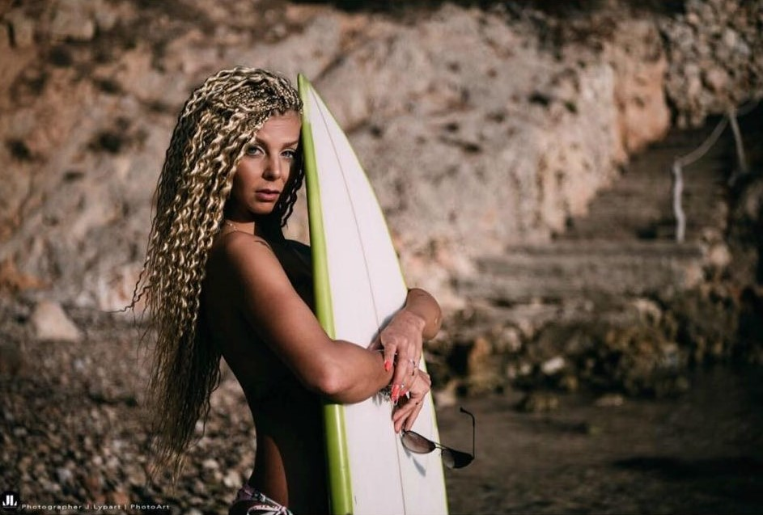

Ilgą laiką gyvenau Ispanijos saloje Palma de Mallorca, kurioje viskas, kas gerai, kažkada baigiasi, ir lieka tik prisiminimai. Apie Maljorką prisiminimai liks gražūs, nes tai nuostabiai žavi sala. Paskutinę dieną, jau pakeliui į Palma, dar pasivaikščiojau po Porto Cristo uostą, ir mintyse atsisveikinau su Maljorka iki kito karto. Skrisdama virš Viduržemio jūros vis svarsčiau, kada čia dabar pasitaikys proga vėl į ją įbristi?…Turbūt negreitai. Grįžus į Lietuvą pradėjau ieškoti darbo, toliau tobulėti, mokytis, tad sekančių atostogų teks kurį laiką palaukti… Bet nieko tokio, jau noriu dirbti ir ko nors naujo išmokti! O ir Lietuvoje norisi ilgiau pabūti. Vasarą juk tiek smagios veiklos gali susigalvoti, kad tik spėk viskam rasti laiko!
